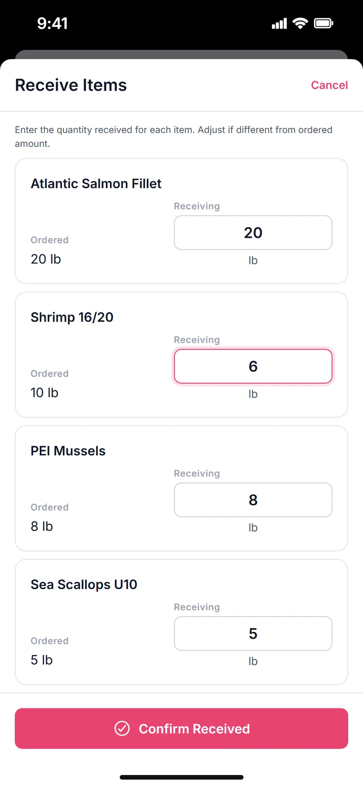
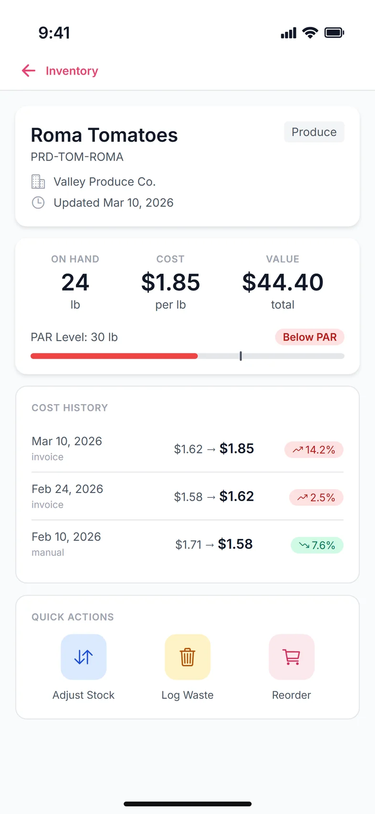
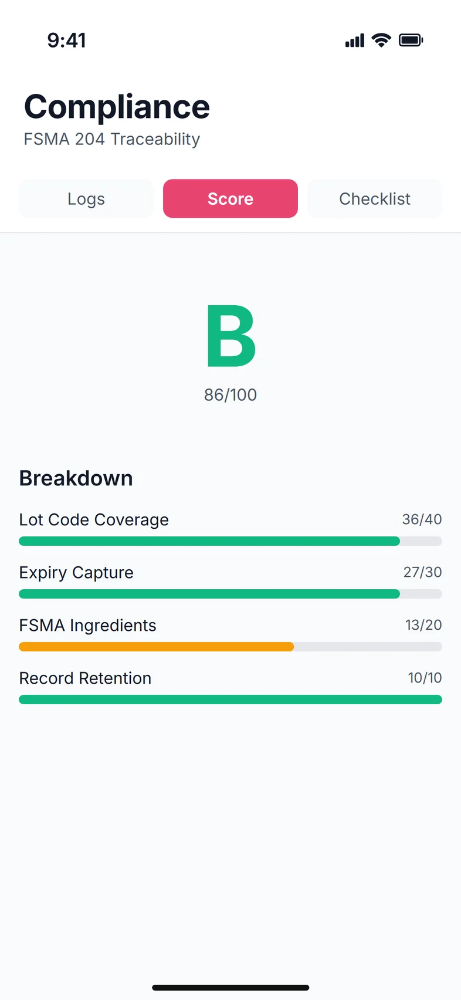
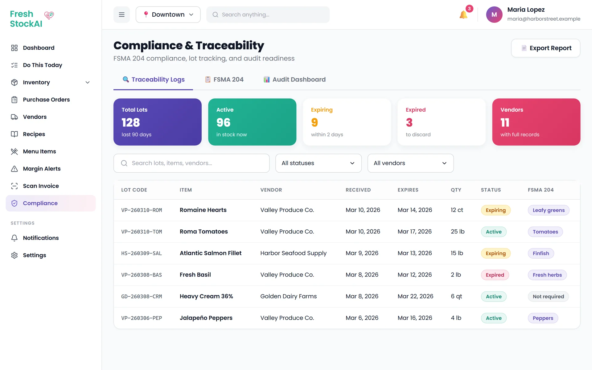
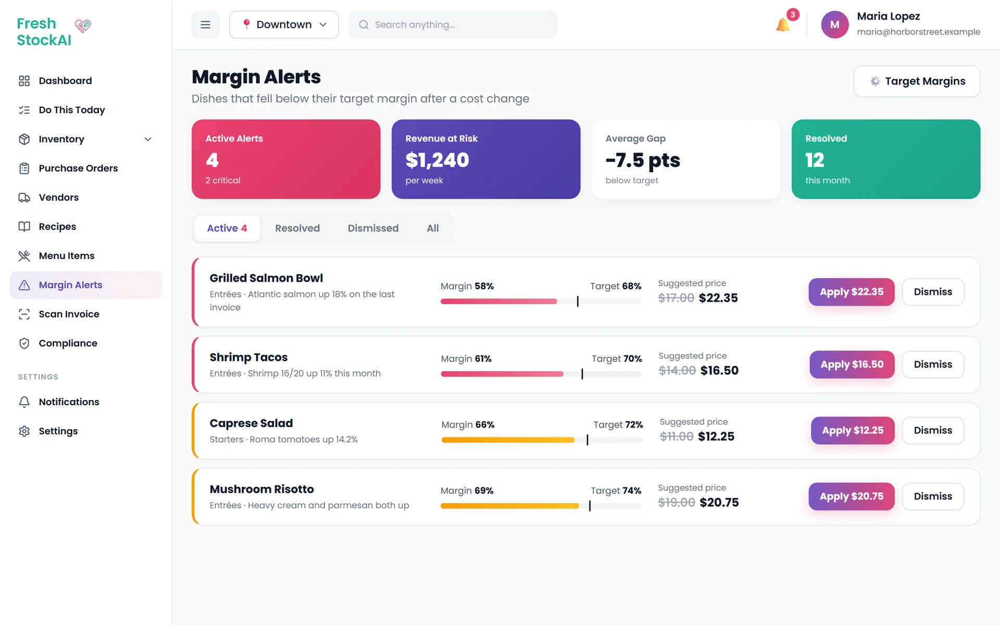
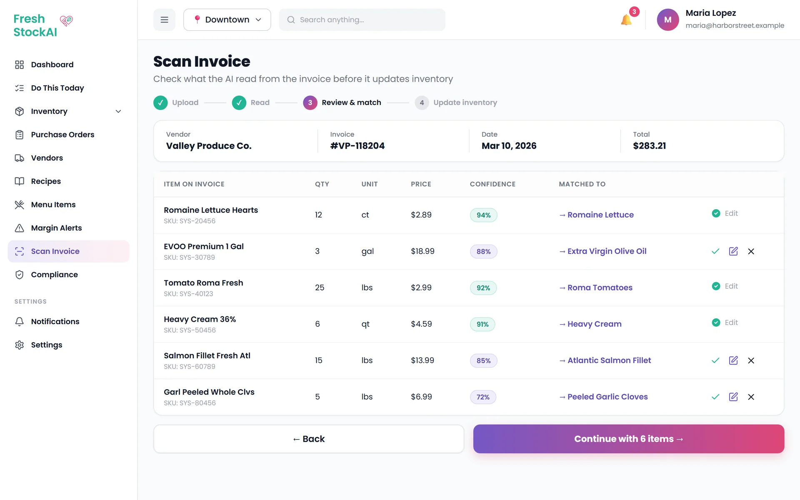

FreshStockAI is 360dmmc's AI inventory platform for restaurants. It tracks what's on the shelves,
what it costs, when it expires and whether each dish still makes money, and it keeps the records the
FDA's food-traceability rule requires. I joined the product team in December 2025 and build across
the stack, from the API and database to the mobile app.
Role
AI Engineer · Full-Stack
Company
360dmmc
Period
Dec 2025 – Present
Stack
TypeScript · PostgreSQL · React Native
(My Role)
Built and reshaped 40+ API endpoints: inventory, purchase orders, dashboards, margin alerts, compliance and settings.
Wrote the background services: expiry watchdog, AI daily recommendations and push notifications.
Built the purchase-order flow and the ingredient detail screen in the React Native app.
Set up the camera, offline storage and frame processing that Flash Audit runs on.
Worked on the foundations too: error handling, WebSockets, linting, tests and API docs.
(The Problem)
Restaurants run on thin margins. Ingredient prices change every week, produce spoils fast, and most kitchens still count stock with a clipboard. By the time someone notices a dish is losing money or a case of greens has expired, the money is already gone. New FDA traceability rules (FSMA 204) also mean records for high-risk foods have to be complete and easy to produce.
(How We Worked)
I work in a cross-functional product team with mobile, backend and product people. Work is planned in sprints from a PM spec. When the spec changes, the API has to change with it, because the frontend team builds against those exact paths.
(The Result)
41 tasks shipped between December 2025 and April 2026, from the first database migrations to the compliance features that went into the leadership demo. I'm still on the team.
(Scope)
41tasks shipped, backend and mobile
40+API endpoints built or reshaped
103+endpoints documented in the team's Postman collection
(Architecture)
Where My Work Sits
One TypeScript API serves the mobile app and the web dashboard. Most of my work was in the highlighted parts.
Mobile appReact Native · Expo · WatermelonDB offline
Web dashboardBuilt by the frontend team
HTTPS + WebSocket ↓
REST APIAuth middleware · org scoping
WatchdogsExpiry · margin · cron
RecommendationsPrep · order · fix
Invoice OCRUpload · match · review
↓
PostgreSQLDrizzle ORM · migrations
FirebaseAuth · Cloud Messaging
Square POSSales data for trends
(Part 01)
Screen by Screen
Each screen below and the API behind it. The app is used in the kitchen, often with wet hands and a weak signal, so every screen reads from the local database first and syncs when it can.
(01 · Dashboard)
Do This Today
The first thing a manager sees is a short list of what needs doing, sorted by urgency. I built the recommendations service behind it. Prep compares the same weekday over the last four weeks with current stock. Order flags items under their reorder point, skipping anything already on an open order. Fix pulls open margin and expiry alerts, with the most expensive first.
Refresh
Updated every hour
Feeds it
Margin watchdog, expiry watchdog, sales history
Actions
Create a PO, update a price, dismiss
(02 · Purchase Orders)
Every order in one list
Managers order from suppliers every day. I replaced the placeholder Orders tab with a real list: status filters with live counts, search by PO number or supplier, sort by date or amount, and pull to refresh. The + button opens a three-step order form (supplier, line items, review) where unit and cost fill in from the ingredient.
Lifecycle
Draft → Sent → Partially Received → Received
Form
Keeps its state between steps, validates before sending
Status
Color-coded badges, the same in every screen
(03 · Receiving)
From the truck to the shelf
When a delivery arrives, the manager opens the order and taps Receive. Each line starts at the ordered quantity, so a full delivery is one tap. If something is short, like the shrimp here, they change that one number. The backend adds the stock to inventory and sets the order to Received or Partially Received, so the rest can be received later.
Default
Received = ordered, edit only what's different
Checks
Can't receive more than was ordered
Result
Inventory updated, status set automatically

(04 · Item Detail)
Everything about one ingredient
Staff check this screen several times a shift. It shows stock against the PAR level, cost per unit and total value, and every cost change with how much it moved. When a supplier raises a price, the margin watchdog recalculates every dish that uses it and raises an alert if one falls below target. Quick actions adjust stock, log waste or start a reorder with the supplier already filled in.
PAR
Below, near or above, with a stock bar and marker
Cost history
Last 10 changes with source and % change
Roles
Editing limited to owners and managers

(05 · Flash Audit)
Count the shelf with a camera
Flash Audit counts stock by pointing a phone at a shelf. I built what it runs on: Vision Camera with a permission flow, a reusable camera with focus, zoom and flash, and a frame processor that reads frames without blocking the UI. Detections show as boxes with a confidence score, and tapping a box confirms it. Counts save to WatermelonDB, so an audit works fully offline in a walk-in with no signal.
Camera
react-native-vision-camera + worklets, 30 FPS
Offline
WatermelonDB with a sync queue
Images
Compressed to under 1 MB before upload
(06 · Compliance)
An audit score for FSMA 204
The FDA's traceability rule needs complete records for high-risk foods like leafy greens, tomatoes and herbs. I built the scoring endpoint: 40 points for lot-code coverage, 30 for expiry capture, 20 for FSMA ingredient traceability and 10 for record retention, turned into a letter grade. A checklist endpoint next to it says what passes, what's partial and what to fix.
Checklist
What passes, what's partial, what to fix
Grade
A to F from the 0–100 score
Export
Traceability log and FDA-format PDF

Screens rebuilt from the app's source code (theme, layout, components and copy) and rendered at iPhone size with example data. No customer data is shown. Flash Audit background photo: Lisa Fotios on Pexels.
(Part 02)
On the Web
Owners run the business from a desktop app. The frontend team built the pages; they run on the same API as the phone, and that API is where my work shows up. The three pages below run on backend features I built: the FDA audit score and lot tracing, invoice scanning, and margin alerts.

Compliance · every lot traced, scored for FDA audits

Margin AlertsDishes losing money, fixed in one tap

Scan InvoicePhoto of an invoice in, stock updated
Pages rebuilt from screenshots of the web app, with example data. No customer data is shown.
Behind the Screens
01
Expiry Watchdog
A cron job at 6 AM and 6 PM finds everything within two days of its discard date, creates expiry alerts and sends push notifications through Firebase Cloud Messaging, respecting each user's notification settings.
02
API Matches the Spec
Renamed the routes to the PM's API spec (vendors, inventory, OCR, compliance, AI) and split the single dashboard into six endpoints, then updated the mobile calls and tests to match. This was blocking all frontend work.
03
Live Updates
A WebSocket server next to the HTTP server, authenticated by token, sends low-stock alerts, new notifications and order status changes to members of the same organization only.
04
Predictable Errors
A global error handler gives every endpoint the same JSON error shape, with error codes the frontend can handle, field-level validation details and no stack traces in production.
05
A Codebase People Can Trust
Moved stray files into the standard structure, added ESLint, Prettier and a lint-staged pre-commit hook, wrote end-to-end tests for invoice OCR, flash audit sync and margin alerts, and documented the API and architecture.
(Timeline)
Month by Month
I started on the database and worked out to the product. The bigger systems came once the foundations were in place.
Dec 2025
Data Model
Purchase order schema in Drizzle, the first migrations, PO routes, and inventory receive and waste endpoints with activity logging.
Jan 2026
Platform & Camera
Error handling, WebSockets and the Postman collection on the server. Vision Camera, the permission flow, the camera component and invoice capture on mobile.
Feb 2026
Intelligence
Frame processor, Flash Audit and image compression. Expiry, FEFO, recommendations, margin and alert endpoints. Offline testing, E2E tests and docs.
Mar 2026
Product Screens
Orders list, create order and order detail with receiving, plus the item detail screen. Expiry watchdog, push notifications and linting.
Apr 2026
Ready for the Demo
API renamed to match the spec, the dashboard split into six endpoints, dedicated margin alerts, compliance score and checklist, settings and onboarding endpoints.
(Tech Stack)
Built With
TypeScript everywhere: one language from the database schema to the phone.